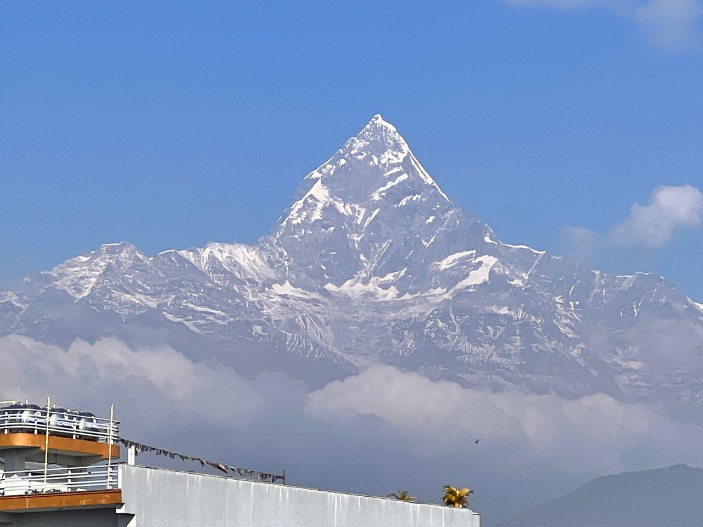
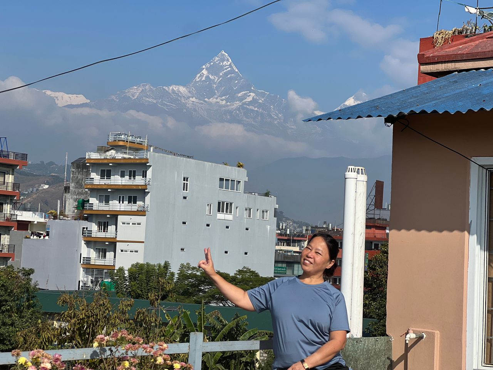

Real Story · 中文
有些祝福，是一早推开屋顶门才看到的。
09/12/2023，我在 Pokhara 过夜。 到酒店的路并不好进，path 很窄，对 Toyotaki 来说又是一个需要小心通过的地方。
可是到了以后，我觉得自己很幸运。 因为从酒店的 rooftop，竟然可以很清楚地看到 Machapuchare peak。
那种感觉很特别。 前一天还是路、灰尘、窄巷、停车、过夜安排； 一抬头，却突然看见一座雪山安静地站在那里。
Machapuchare 的形状很明显，像一座尖尖的山峰，从云层和城市屋顶后面出现。 它不是很靠近，却非常有存在感。 那一刻，Pokhara 的城市和 Himalayas 好像叠在一起。
我的 portrait 是当地一位 cleaner lady 帮我拍的。 她不是专业 photographer，可是那张照片对我很珍贵。 因为她帮我留下了一个证据： 我真的站在那里，站在 Pokhara 的屋顶上，背后是 Machapuchare。
这趟旅程有很多 grand moment，也有很多这样的 small blessing。 不是特别安排的景点，不是预订好的观景台， 只是一个过夜的地方，刚好给我打开了一座山。

English Memory Summary
A narrow path led to a clear mountain view.
On 09/12/2023, Tuzi stayed overnight in Pokhara. The path into the place was narrow, another small driving challenge for Toyotaki.
But from the hotel rooftop, she was blessed with a clear view of Machapuchare. The mountain appeared behind the city rooftops, sharp and quiet against the blue sky.
A local cleaner lady helped take Tuzi’s portrait on the rooftop. The photo became more than a tourist picture — it became proof of a small blessing: after the road, the narrow path, and the overnight stop, the mountain revealed itself.
Heart Statement
有时候，路给你的不是目的地，而是屋顶上的一座山。
我只是找地方过夜。 可是第二天，Machapuchare 出现在屋顶外面。
不是所有美好的东西都需要安排。 有些风景，是你一路小心开过去以后，才突然被允许看见的。
I came for a place to stay. The rooftop gave me a mountain.